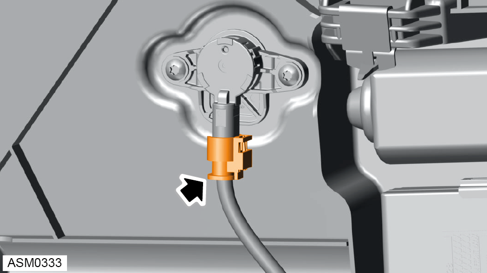
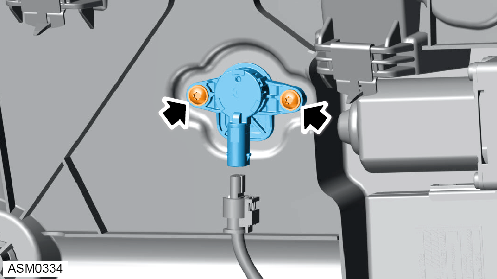

Door P-Satellite Pressure Sensor - Left Side
Print
Operation Code: 17.35.11-02
Removal
- Disconnect battery. Refer to procedure.
 WARNING: Refer to all Warnings and cautions before working on the SRS system.
WARNING: Refer to all Warnings and cautions before working on the SRS system.
WARNING: The Sensor and Diagnostic Module (SDM) can maintain sufficient voltage to cause an airbag deployment for up to 20 seconds after the battery has been disconnected. Before working on the airbag system, or in close proximity to an airbag, wait at least 30 seconds before commencing work.
NOTE: Before disconnecting the battery read any stored trouble codes.
- Remove door trim assembly - left side. Refer to procedure.

- Disconnect harness connector from door pressure sensor.

- Remove 5x20 screws (x2) securing door pressure sensor to door water deflector panel. Torque 6 Nm.
- Remove door pressure sensor from door water deflector panel.
Installation
- Installation is the reverse of removal procedure except for the following:
- Perform a diagnostic read and clear error memory using Lotus Insight tool.
- Turn on ignition and make sure SRS warning lamp extinguishes.